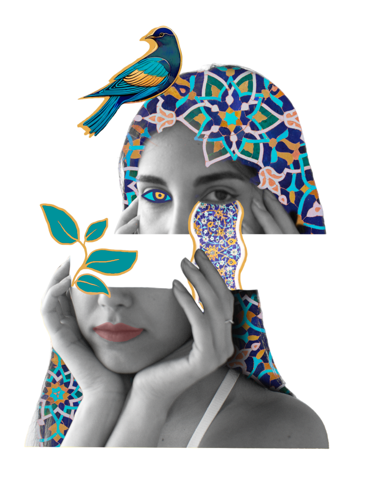

Dorsa Zare
Game Designer | User Experience Designer
Recipient of the Behaviour Interactive Scholarship in Game Design
Portfolio

About
Hi, I'm Dorsa, a multidisciplinary designer focused on player experience, interaction design, and real-time environments.
I'm interested in how players understand and move through interactive spaces. My work explores gameplay UX through environments, signals, and systems that guide players naturally without breaking immersion. I enjoy thinking outside the box and approaching problems from both creative and technical perspectives.
With a background in Computation Arts and Communication Studies, I've worked across game design, level design, VR experiences, and UX projects. I enjoy creating environments that feel intuitive to explore while refining ideas through playtesting, iteration, and collaboration.
I'm also a recipient of the Behaviour Interactive Research Chair Bursary in Game Design and a participant in Ubisoft Game Lab, and I'm excited to continue exploring opportunities where gameplay, UX, and technical creativity intersect.